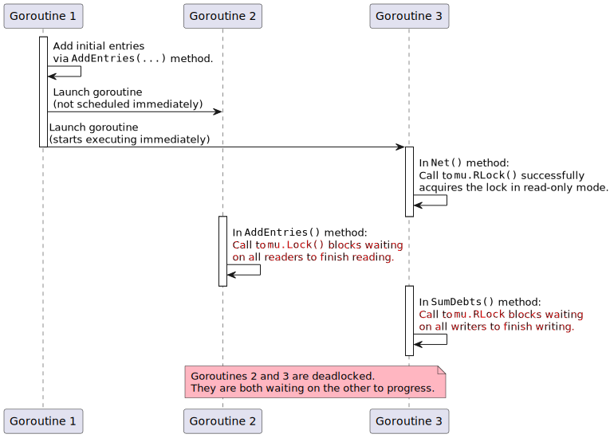

2022-10-14
A previous blog post made a few claims about recursive usage of
Go’s RWMutex. In
particular:
These claims were used as part of a justification for preferring
Mutex over RWMutex as a default choice and
only using RWMutex after having explicitly calculated that RWMutex would
give a performance improvement.
This post will dive into the details. It will explain the mechanism behind this bug class and how it may occur during real-world software engineering activities.
The example used throughout this post will be a small Go type that models a
financial account ledger. It simplifies a real account ledger model but is
sufficient to show how recursive usage of RWMutex can occur. It contains:
ints.RWMutex to control thread-safe read-only and read-write access to the
entries.The type definition is:
type AccountLedger struct {
mu sync.RWMutex
debits []int
credits []int
}
It has a method that updates the account ledger by adding new credit and debit entries. The mutex is held in read-write mode during the execution of the method.
func (a *AccountLedger) AddEntries(debits, credits []int) {
a.mu.Lock()
defer a.mu.Unlock()
a.debits = append(a.debits, debits...)
a.credits = append(a.credits, credits...)
}
It has another method that calculates the net balance of the account ledger. The net balance is just the difference between the sum of the credits and the sum of the debits. The mutex is held in read-only mode during the execution of this method.
func (a *AccountLedger) sumDebits() int {
var sum int
for _, d := range a.debits {
sum += d
}
return sum
}
func (a *AccountLedger) sumCredits() int {
var sum int
for _, c := range a.credits {
sum += c
}
return sum
}
func (a *AccountLedger) Net() int {
a.mu.RLock()
defer a.mu.RUnlock()
return a.sumDebits() - a.sumCredits()
}
Everything in this program works well! There are no bugs here. Some unit tests can be written to show how the type behaves. First, its basic usage can be tested by adding some entries to the account ledger and then calculating the net balance and ensuring it’s the right value.
func TestNet(t *testing.T) {
var ledger AccountLedger
ledger.AddEntries([]int{10, 7}, []int{9})
got := ledger.Net()
const want = 8 // 10 + 7 - 9
if got != want {
t.Errorf("got %d want %d", got, want)
}
}
Since the type is thread-safe, some tests should be written that call the methods concurrently to ensure everything works correctly. The new test adds more entries to the account ledger while concurrently calculating the net balance. Because the ordering of the method calls is non-deterministic, the test passes if the net balance is one of two values.
func TestNetConcurrent(t *testing.T) {
var ledger AccountLedger
ledger.AddEntries([]int{10, 7}, []int{9}) // Net is 8
var wg sync.WaitGroup
wg.Add(2)
go func() {
// Added entries net to -1.
defer wg.Done()
ledger.AddEntries([]int{6, 3}, []int{10})
}()
var got int
go func() {
defer wg.Done()
got = ledger.Net()
}()
wg.Wait()
// The call to Net() should occur either before or after the second call to
// AddEntries(...), so got should either be 8 or 7, depending on the
// ordering.
if got != 7 && got != 8 {
t.Errorf("got was %d but expected 7 or 8", got)
}
}
Software requirements change over time. Imagine there is a desire to calculate
the sum of the credits and the sum of the debits separately. Because the Net
method was implemented using helper methods, similar methods already exist.
All that needs to be done is export them and ensure the lock is
held in read-only mode during execution.
The diff looks like this:
@@ -19,3 +22,5 @@
-func (a *AccountLedger) sumDebits() int {
+func (a *AccountLedger) SumDebits() int {
+ a.mu.RLock()
+ defer a.mu.RUnlock()
var sum int
@@ -27,3 +32,5 @@
-func (a *AccountLedger) sumCredits() int {
+func (a *AccountLedger) SumCredits() int {
+ a.mu.RLock()
+ defer a.mu.RUnlock()
var sum int
Some new unit tests for the newly exported methods can now be written (these are omitted due to not being very interesting). The existing unit tests still pass, so high fives are exchanged, and the new code is pushed out to production.
Eighteen months later, the software starts locking up. When it initially starts
up, it works fine for a while. But then something happens, and all of the
methods on the AccountLedger start blocking indefinitely.
Strangely, the unit tests have never failed. Perhaps the goroutines are being interleaved slightly differently in the production environment compared to the unit tests? The way goroutines are interleaved is an implementation detail of Go’s scheduler, so it shouldn’t be surprising if things act slightly differently in different scenarios.
One way to reproduce the failure is to sprinkle in some calls to
runtime.Gosched(), which artificially
yields control back to Go’s scheduler, allowing other goroutines to be
scheduled instead. This is a general debugging technique for
concurrency-related bugs because it can help change how goroutines
interleave with each other.
It turns out that only one call to runtime.Gosched() is needed to reproduce
the deadlock via the existing unit test suite.
func (a *AccountLedger) Net() int {
a.mu.RLock()
defer a.mu.RUnlock()
+ runtime.Gosched()
return a.SumDebits() - a.SumCredits()
}
The tests now time out:
$ go test
panic: test timed out after 10m
The documentation for sync.RWMutex states that it shouldn’t be used
recursively (emphasis mine):
If a goroutine holds a (sic) RWMutex for reading and another goroutine might call Lock, no goroutine should expect to be able to acquire a read lock until the initial read lock is released. In particular, this prohibits recursive read locking. This is to ensure that the lock eventually becomes available; a blocked Lock call excludes new readers from acquiring the lock.
That’s exactly what the code does though! The lock is acquired in read-only
mode by calling RLock() at the start of the Net method. It’s then
reacquired a second time in the SumDebits method. Another goroutine could
simultaneously call the AddEntries method, which acquires the lock in
read-write mode by calling Lock().
The following sequence diagram shows a goroutine ordering that could cause the deadlock to occur in the unit test:

The bug can be fixed by restructuring the code so that the mutex is acquired in read-only mode only once per call to an exported method. There are many ways to do this, each with its own trade-offs. The details are not explored in this post.
Mutex have prevented the bug?Unfortunately, using a regular Mutex instead of an RWMutex wouldn’t have
prevented this bug. The Mutex type doesn’t support recursive locking either
(i.e. cannot be locked multiple times by the same goroutine).
However, if Mutex were used, then the bug would have been trivial to
catch:
Even the non-concurrent unit test would have caught the problem. Calls to the
Net method would block forever, so the test would just time out and fail.
Even if there were no testing, the program would have locked up the first
time the Net method was called in production. In most circumstances, this
is better than having a dormant bug.